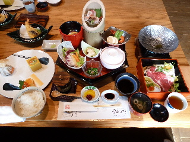

神門の真心膳の値段は只今1430円です。
2022/01/23
フリーパーパーのリビングしまねを見てたら、神門が載ってました。
ホームページでも確認したところ真心膳は値段が1430円（税込み）になったようです。
10年前とは物価が変わりましたね。
島根県出雲市駅南町1丁目3-3
閉店しました。
2022/01/23
フリーパーパーのリビングしまねを見てたら、神門が載ってました。
ホームページでも確認したところ真心膳は値段が1430円（税込み）になったようです。
10年前とは物価が変わりましたね。
2010/12/29
限定20食のランチ「真心膳」を食べき行きました。
11時15分から整理券配布で、11時30分に店がオープンしました。
人が沢山並んでて、食べれなかったらどうしよう？なんて心配していたんですが、なんなく整理券がもらえて良かったです。

豪華です。開店3周年記念で、いつもよりも豪華になっているようでした。これで1000円は凄いです。お買い得です。
お料理の品数が多いですね。ランチとは思えないくらいの量です。種類の違う色んな味が楽しめて良かったです。
これだけ食べたらもうお腹いっぱいになりました。
デザートは付かないですが、食後にコーヒーが付きました。
また食べに行きたいって思いました。バイキングのお店で好きなものを好きなだけ食べるか、ここで色んな種類のお料理をお腹いっぱい食べるか迷いますね。